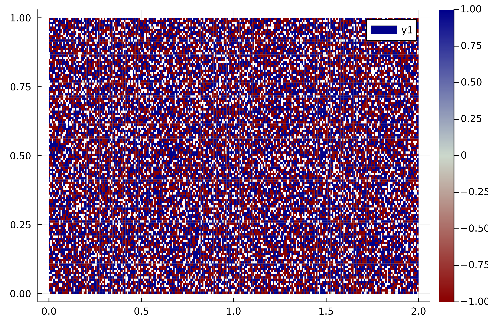

Coherent Sets
Mathematical Background
The following approach is decribed in [8].
Recalling the section on Almost Invariant (metastable) Sets, we wish to understand sets which resist mixing over time. In the constext of autonomous dynamics, these are almost invariant sets. However, in the context of nonautonomous dynamics these are often referred to as coherent sets. To distinguish the maps for different times t we will write $f_t$ to denote the dynamics at time $t$.
If the sets $A_t$ and $A_{t+\tau}$ satisfy $A_t \approx f_{t}^{-1} (A_{t+\tau})$ then the set of points currently in $A_t$ will be transported to $A_{t+\tau}$ with little mixing, i.e.
\[\frac{m( A_t \cap f_{t}^{-1} (A_{t+\tau}) )}{m(A_t)} \approx 1 .\]
As in the previous sections, we will summarize this as an eigenproblem. We would like to translate this problem to one of the form
\[(f_t)_{\#}\,\mu_t \approx \mu_{t+\tau}\]
for some measures $\mu_t,\ \mu_{t+\tau}$ with supports on $A_t,\ A_{t+\tau}$, respectively. However, in general we cannot expect $A_t = A_{t+\tau}$ and hence cannot expect $\mu_t = \mu_{t+\tau}$ either. Therefore, the above equation is not an eigenproblem.
Instead, our heuristic will be to push forward $\mu_t$ using $(f_{t})_{\#}$ to obtain something close to $\mu_{t+\tau}$, and then pull back with the adjoint operator $(f_{t})_{\#}^{\,*}$ to return something close to $\mu_t$. (Analogously we could pull back $\mu_{t+\tau}$ with $(f_{t})_{\#}^{\,*}$ and then push forward with $(f_{t})_{\#}$.)
This leaves a new eigenproblem of the form $(f_{t})_{\#}^{\,*} \, (f_{t})_{\#}$ (or $(f_{t})_{\#} \, (f_{t})_{\#}^{\,*}$). These eigenvalues are precisely the right (or left) singular vectors of the operator $(f_t)_{\#}$.
Example
We will consider the periodically driven double-gyre described in the section on Almost Invariant (metastable) Sets. See that page for details on the map.
t₀, τ, steps = 0, 0.1, 20
t₁ = t₀ + τ * steps
Tspan = t₁ - t₀
Φₜ₀ᵗ¹(z) = Φ(z, t₀, τ, steps)
domain = Box((1.0, 0.5), (1.0, 0.5))
P = BoxGrid(domain, (256, 128))
S = cover(P, :)
F = BoxMap(:grid, Φₜ₀ᵗ¹, domain, n_points=(6,6))
T = TransferOperator(F, S, S)
# we need to rescale the operator so that we
# can be certain that the second-largest
# singular value is the desired one
function rescale!(T::TransferOperator)
M = T.mat
p = ones(size(T, 2))
q = M * p
M .= Diagonal(1 ./ sqrt.(q)) * M
end
rescale!(T)
# we give Arpack some help converging to the singular values,
# see the Arpack docs for explanations of keywords
tol, maxiter, v0 = eps()^(1/2), 1000, ones(size(T, 2))
U, σ, V = svds(T; nsv=32, maxiter=maxiter, tol=tol, v0=v0)
σ32-element Vector{Float64}:
1.0
0.9999667529824439
0.9998753180044381
0.9998711805027466
0.9998276390873286
0.9998233162413814
0.9997971943727411
0.9996932575197699
0.9996145813928398
0.9995697900007197
⋮
0.9990048108041221
0.9989567143661751
0.998922495310833
0.9989116047695611
0.998900185707294
0.9988661553791491
0.9987727359682239
0.9987053450068214
0.998671710738242μ = U[2]BoxMeasure in 256 x 128 - element BoxGrid with 32768 boxes in its suportusing Plots
p = plot(sign ∘ μ, colormap=:redsblues);
n_frames = 120
times = range(t₀, t₁, length=n_frames)
anim = @animate for t in times
Φₜ(z) = Φ(z, t, τ, steps)
F = BoxMap(:grid, Φₜ, domain, n_points=(6,6))
F♯ = TransferOperator(F, S, S)
rescale!(F♯)
global maxiter, tol, v0
U, σ, V = svds(F♯; maxiter=maxiter, tol=tol, v0=v0)
μ = U[2]
# do some rescaling to get a nice plot
μ = ( x -> sign(x) * log(abs(x) + 1e-4) ) ∘ μ
s = sign(μ[(10,40)])
M = maximum(abs ∘ μ)
μ = s/M * μ
plot(μ, clims=(-1,1), colormap=:redsblues)
end;
gif(anim, "coherent.gif", fps=20)